Documentation Of Module 3
Computer Controlled Cutting
-
The Third Module Of Our Fablab Was of Computer Controlled Cutting Which Includes Understanding Of Designing Softwares Like AutoCad, Fusion 360 And Laser-Cad
-
At The Very First Day,I Was Introduced To All The Basic Designing Concepts.I Got My Day-1 Assignment To Explore About Parametric Designs. It Was Some-Kind Of Hectic Task For Me But I Managed To Tackle It.
-
Parametric design is a design method in which features, such as building elements and engineering components, are shaped based on algorithmic processes rather than direct manipulation. In this approach, parameters and rules establish the relationship between design intent and design response.
- I made a parametric design in which i gave it various parameters like glength,gheight,etc. aim of making parametric designs is that we can change it anytime according to our requirements with the help of parameters.
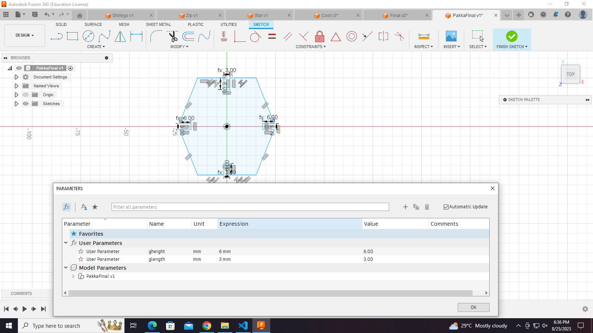
-
group Assignment:-
- aim: To perform or find kurf calculation.
- Task: 1) make a parametric design and note down it dimensions. 2) Export the design in .dxf format and upload it on laser-Cad software. 3) Take proper precautions before starting the laser cutter. 4) Give command to the laser cutter to cut the design. 5) engrave the design from the cardboard and measure its dimensions. 5) summarize the dimensions before cutting and after cutting.
- Outcome: After cutting, we came to know about the laser cutter's power, speed, accuracy and extend of thickness.
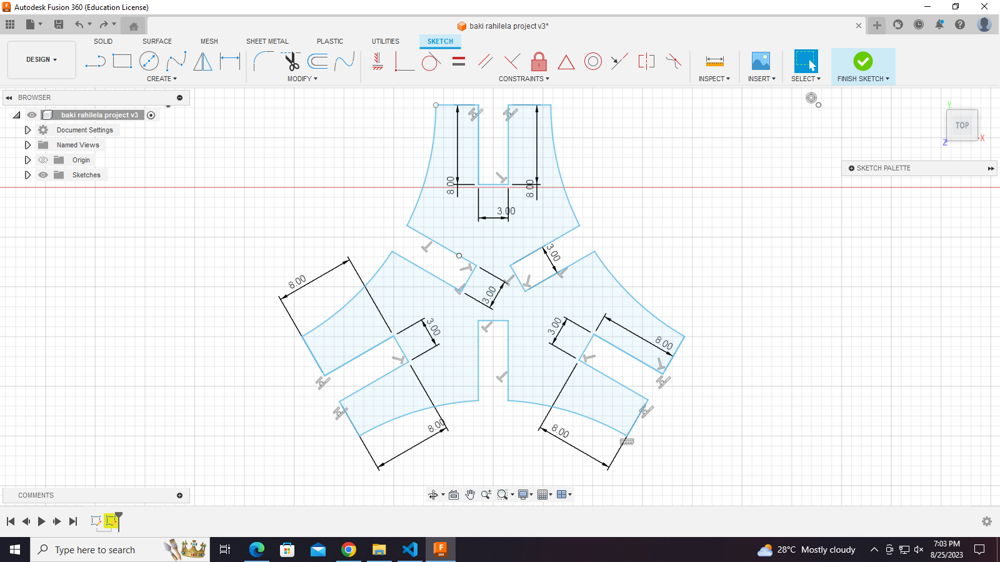
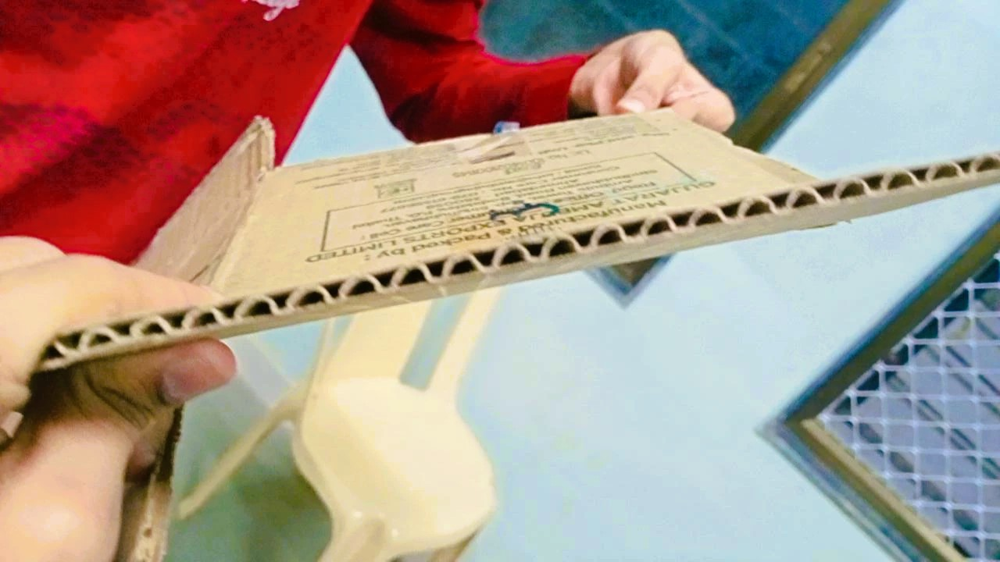
Individual Assignment:- i was given the task to make some parametric design and joint them in such a way that they should make an assembly. assembly means joining the parts in such a way that it represent some kind of ordered geometry.
- Task: To make an assembly
- Make a parametric design.
- Note down it dimensions.
- export it in .dxf or .dwf format.
- upload it on the laser-Cad software.
- make the required changes on the laser-Cad workspace.
- copy the objects if want multiple copies to assemble.
- lastly, check that the USB port is properly connected with laser-Cutter otherwise it will provide communication error.
Click on download and file will be downloaded in machine.
- Operate the laser-Cutter properly by giving relevant instructions.
- collect the design and engrave it to make the required assembly.
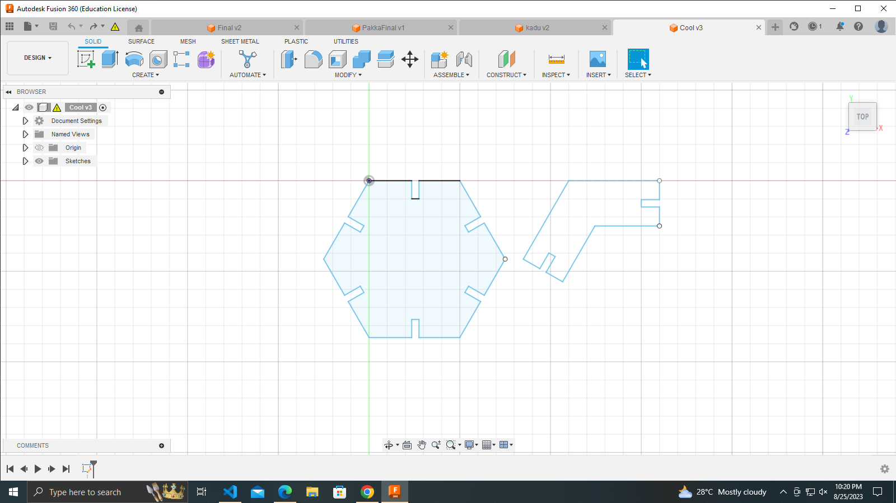
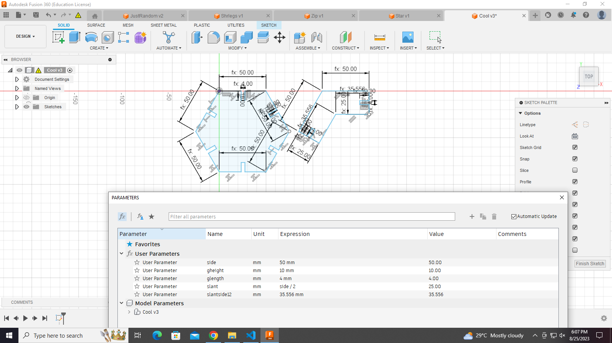
Laser-Cad
- laser-Cad is a computer software in which we can import our .dxf or .dwf file and give commands to laser-Cutter as required. once our modifications are over, we can download the file and file will be uploaded on the laser-Cutter.
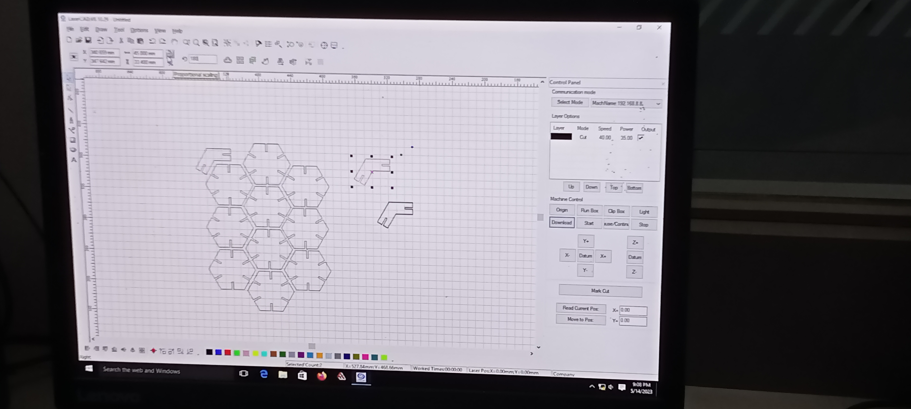
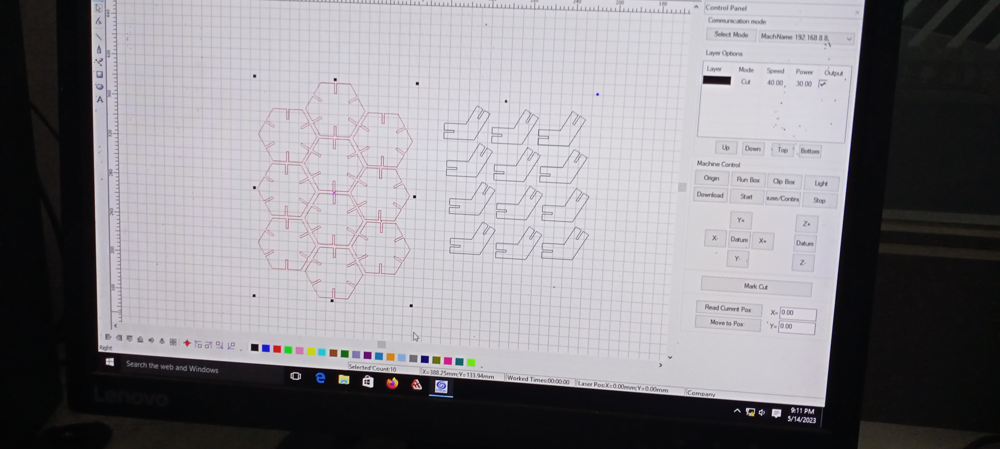
- We can change the speed,power,etc of the laser in order to get our design cut properly. specific matertials have the fixed value of speed and power. For example- cardboard 6.9mm(speed=35mm/s and power=70%).
Cutting process by laser cutter.
- SIL Laser Engraving - Cutting Machine
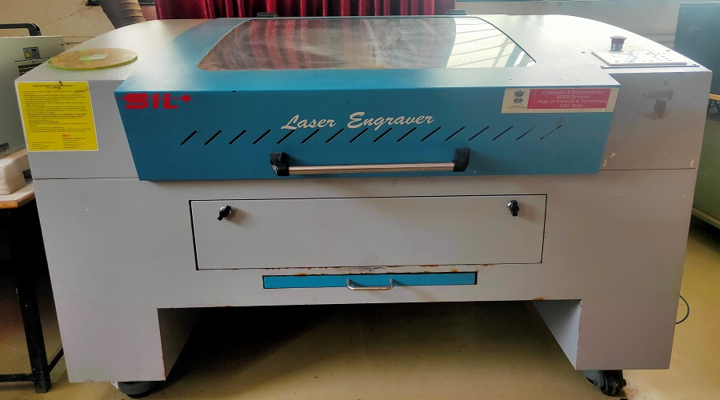
- flow-Chart of process of starting laser-Cutter
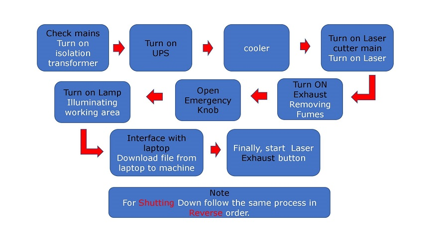
- Below Are some images and videos taken while doing the final assembly.

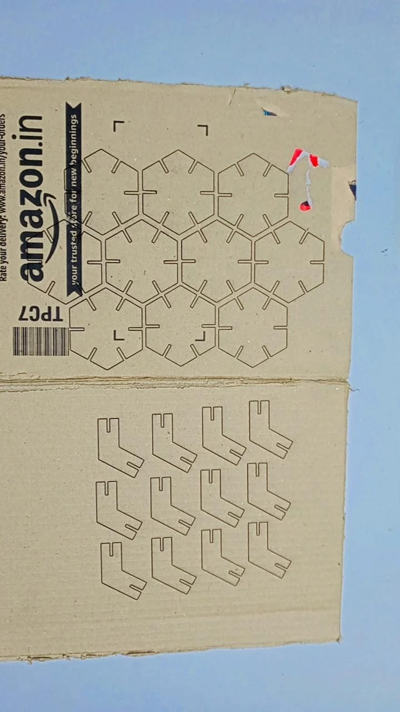
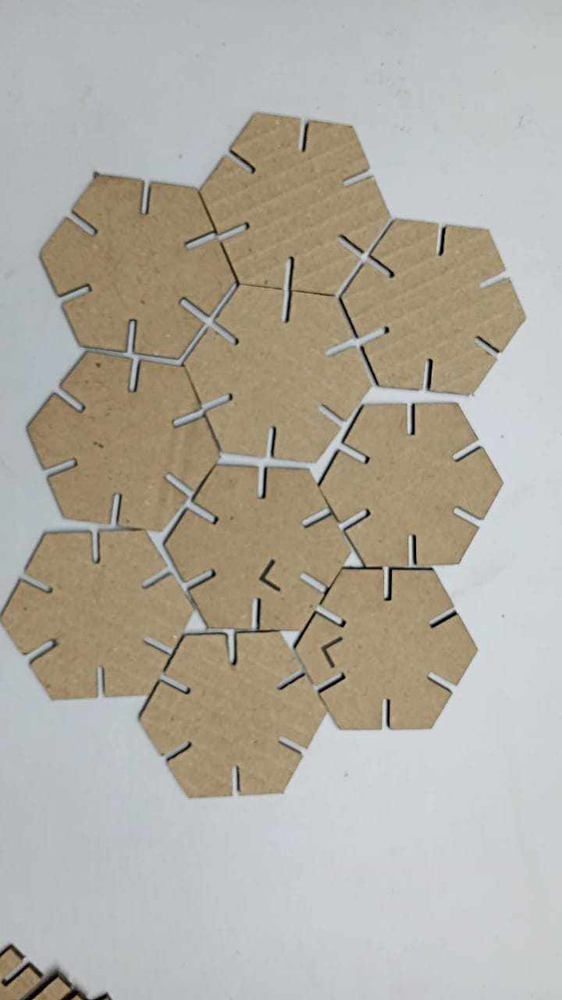
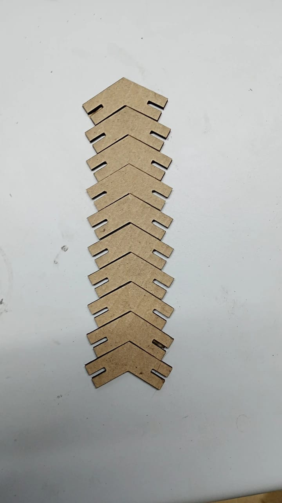
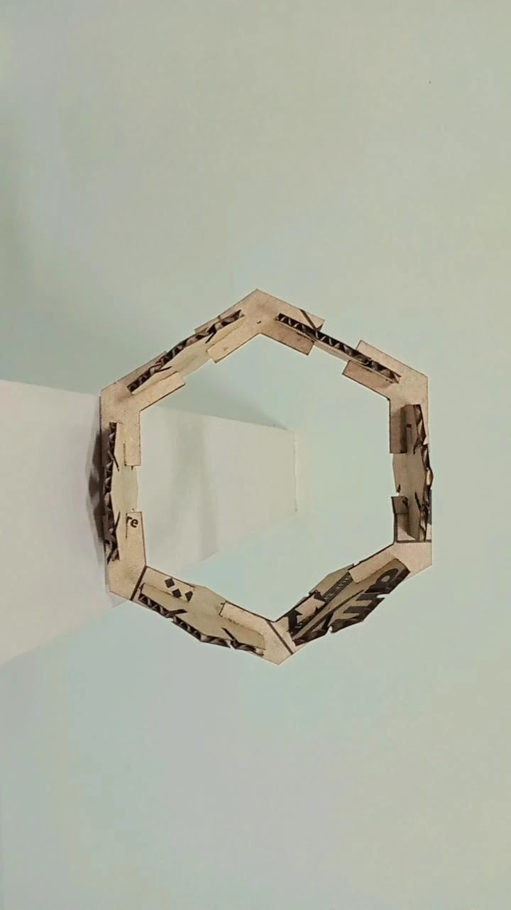
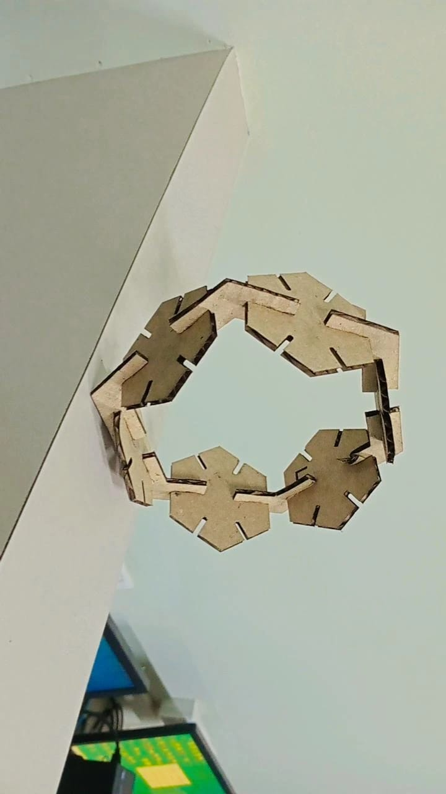
>
Final submitted image:-
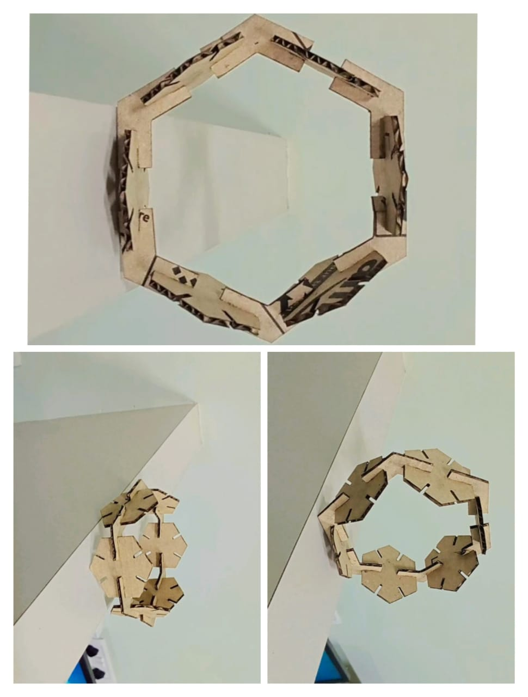
OK